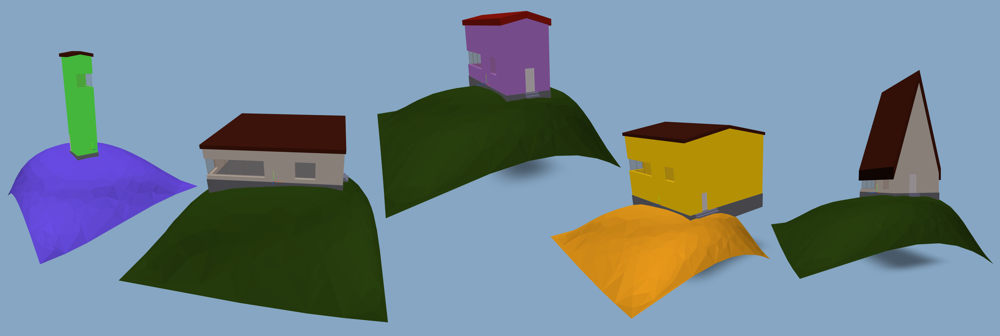

Recreation of the original IfcOpenHouse with the IfcOpenShell Python API
Welcome to this step-by-step tutorial on how to build a parametric house 🏠 from scratch in IFC with IfcOpenShell 🐚. Before getting started, you may want to pass by the home page, in case you still haven’t. There, you’ll find a general description about the tools 🛠️ being used, installation instructions, as well as links to the original IfcOpenHouse project in C++, by Thomas Krijnen.
Note that this is a static website version of a Jupyter 🪐 Notebook 📒, optimized for readability and ease of access. If you wish to run the code, refer to the notebook itself, or alternatively you can always clone the repository.
This project relies on nbdev to fully integrate code and documentation from inside Jupyter Notebooks. However, if notebooks are not your thing and you just prefer pure Python 🐍, there’s also an autogenerated script.
Lastly, you may want to play a bit and navigate through the IFC.js preview of the house above these lines. Double click an element to gather entity info from the underlying IFC. Throughout this tutorial, you’ll learn how to create each one of those elements and produce a valid IFC 🚀.
Necessary imports
The following commands import most of the necessary libraries 📚 for this project. There’s also an ios_utils module with some code placed into a separate *.py file, so as to focus on the important bits within this notebook. Feel free to also consult its content as an extra task, if desired. Open Cascade is not imported by default, since its usage will depend on the chosen method for the terrain creation.
The following information defines input data for the house creation. Note that it can be modified conveniently to parametrically reconstruct our IFC model. After such modification, remember to run again 🏃♀️🏃 any cell depending on the modified parameters.
Furthermore, without requiring any action from your side, any IFC-related overwritten variable will be automatically garbage-collected 🗑️ by means of an audit hook (see next section).
# Data definitionproject_name ='IFC Open House'author_details = {'given_name': 'Carlos', 'family_name': 'V', 'identification': 'CV'}author_role ='CIVILENGINEER'organization_details = {'name': 'OSArch', 'identification': 'OSArch'}site_name, building_name, storey_name ='OSArch Land', 'Open house', 'Ground floor'# All dimensions in metersstorey_size = Vector([10., 5., 3.])wall_thickness =0.36footing_ledge =0.05footing_size = Vector([ storey_size.x +2* (wall_thickness + footing_ledge), storey_size.y +2* (wall_thickness + footing_ledge),2.])roof_ledge = Vector([0.1, 0.22])roof_thickness =0.36roof_angle =45.# degreesroof_angle_sin =float(np.sin(roof_angle * np.pi/180))roof_angle_cos =float(np.cos(roof_angle * np.pi/180))roof_height =float( (storey_size.y /2+ wall_thickness + roof_ledge.y) * np.tan(roof_angle * np.pi /180))roof_size = Vector([ storey_size.x +2* (wall_thickness + roof_ledge.x), storey_size.y +2* (wall_thickness + roof_ledge.y), roof_height])door_horizontal_offset =1.6window_base_height =0.4right_window_horizontal_offset =2.stair_width =1.2# Colours for surface styleswall_colour = ColourRGB(.75, 0.73, 0.68)footing_colour = ColourRGB(.38, 0.4, 0.42)roof_colour = ColourRGB(.24, 0.08, 0.04)terrain_colour = ColourRGB(.15, 0.25, 0.05)door_colour = ColourRGB(.8, .8, .8)window_colour = ColourRGB(.5, 0.4, 0.3, transparency=0.8)stair_colour = ColourRGB(.45, 0.47, 0.56)# Choice of terrain building method. Use NONE if unsure about the viewer capabilities. terrain_build_method = TerrainBuildMethod.TESSELATE_OCC_SHAPE# Door and window geometric info is defined in a separate file due to its complexityfrom IfcOpenHouse.opening_data import door_params, single_window_params, triple_window_params
Setting up a project
Everything is ready to start using IfcOpenShell 🐚. So without further ado, let’s get down to business 👩🏭:
# Little trickery to ease the use of the ifcopenshell.api when scriptingios = IfcOpenShellPythonAPI() #q1: thoughts about a data-scientish "import ifcopenshell.api as ios"?# standard use -> ifcopenshell.api.run('root.create_entity', file, ifc_class='IfcWall')# with the trickery -> ios.root.create_entity(file, ifc_class='IfcWall')# It will reduce the overall string overhead, as well as the length of the API calls# However, it will not help with static typing autocomplete and help# Bear in mind that currently, this is not a canonical use of IfcOpenShell# Setting up the projectfile= ios.project.create_file(version='IFC4')# Don't use 2X3 in 2023! It's terribly outdated and lacks many useful classes. This simple# project uses many >=IFC4 features, and hence selecting 'IFC2X3' here would only lead to issues.# Pending to use 4x3 (much better docs) when ios defaults to IFC4X3_TC1 and IFC.js supports itproject = ios.root.create_entity(file, ifc_class='IfcProject', name=project_name)ios.project.assign_declaration(file, definition=project, relating_context=project) #q2: from my ignorance, is this necessary?ios.unit.assign_unit(file, length={'is_metric': True, 'raw': 'METERS'}, area={'is_metric': True, 'raw': 'METERS'}, volume={'is_metric': True, 'raw': 'METERS'})ctx = ios.context.add_context(file, context_type='Model')body = ios.context.add_context( #q3: isn't this screaming for "context.add_subcontext"? also, context_type may be redundantfile, context_type='Model', context_identifier='Body', target_view='MODEL_VIEW', parent=ctx)# We allow for live overwriting of IfcOpenShell entities within the notebook environment# Only use this sorcery when experimenting in Jupyter Notebooks, never in productionsys.addaudithook( ios_entity_overwrite_hook(file, sys.modules[__name__], do_not_delete=[project, ctx, body]))
Ok, we just got started! The file object 📁 we just created will be the main binding agent for the rest of the notebook. As it can be seen, most API calls are self-explanatory. In order to look up for the most updated documentation, check out the following links:
IFCs can hold data from stakeholders, like a person 🤓 or an organisation 👥. With the last two lines, we’re assigning the user here defined to the rest of the IfcOpenShell API actions taken from now on, as well as IfcOpenShell as the application.
As expected, IfcOpenShell 🐚 is tightly coupled to the underlying IFC Schema. Hence, opening a browser tab with the IFC official documentation is not at all a bad idea when using it.
PRO TIP 👉 IFC4X3 docs are far better than previous versions!
Don’t be scared of the bSI documentation! 👻 If you’ve reached this point already, you’re very close to turbocharge 🚀 your IfcOpenShell coding skills 👩🏽💻 by relying on the underlying IFC schema.
In order to better illustrate it with our new wall 🧱🧱, let’s consider the following. If we want to know among which predefined types we can choose for a certain IfcWall, going to its documentation page, scrolling to “Predefined Type”, and clicking into IfcWallTypeEnum will give us the appropriate list: MOVABLE, PARAPET, PARTITIONING, PLUMBINGWALL, RETAININGWALL, SHEAR, SOLIDWALL and WAVEWALL.
Clearly, our traditional structural wall for the house needs to be classified as a SOLIDWALL. As always in IFC, a predefined type could also be set as USERDEFINED if none of the enumeration options fits our use case, in which case we could monkey-patch 🐵 the type as south_wall.ObjectType = 'CUSTOM TYPE'.
The previous kind of reasoning and consulting of the documentation is to be followed for the rest of this notebook. In case that at some point we needed to know which IFC class a certain IfcOpenShell 🐚 entity corresponds to (so as to know where in the IFC documentation to look at), the is_a() method will give us the answer:
south_wall.is_a()
'IfcWall'
This notebook environment 📒 highly encourages experimentation 👨🔬, like in the statement above. Feel free to add a new cell at any point to further explore the newly created variables. Another very useful method is get_info(), which returns a dictionary with all the entity attributes:
As seen previously with user defined types, entity attributes can be easily monkey-patched 🐵 (we’re in Python after all! 🐍). It will work if the attribute exists in the corresponding IFC Schema. For instance, if we wanted to set the “Description” of our wall, we would do it as follows:
south_wall.Description ='This is my first wall with the IfcOpenShell Python API!'
In any case, the IfcOpenShell Python API 🐚 takes care of most low level tasks. Actions like the generation of global IDs, the assignment of owner history to entities or the setup of entity relationships for geometric representations or placements are already dealt with automatically 👌🏻.
Now, let’s assign the wall to the ground floor storey by means of spatial.assign_container:
It’s important to keep in mind the IFC distinction between geometry and semantics. Up to now, we’ve created an IfcWall entity 🧱🧱, only containing a name and a predefined type. However, the geometric representations of the actual wall will exist within their own IfcShapeRepresentation entity 🗿. That is to say, one thing is the creation of the IfcWall, but then its geometry needs to be created as a separate IFC class, which in turn will be linked to the former.
The API call geometry.add_wall_representation generates a swept solid (IfcExtrudedAreaSolid), an implicit geometry representation which requires less memory 🪶 than explicit BREPS or tesselated representations. You should know that IFC supports all of them 🚀, among other fancy paradigms like Constructive Solid Geometry or BSplines. All in all, for the typical walls/slabs or beams/columns typically used in the AEC field, an IfcExtrudedAreaSolid is difficult to beat, and that’s why the IfcOpenShell API 🐚 defaults to it. You don’t necessarily need to be aware of the low level definition of a wall geometry, but just let the library do the job for you 😎.
south_wall_representation = ios.geometry.add_wall_representation(file, context=body, length=storey_size.x +2* wall_thickness, height=storey_size.z, thickness=wall_thickness)ios.geometry.assign_representation(file, product=south_wall, representation=south_wall_representation)ios.geometry.edit_object_placement(file, product=south_wall, matrix=placement_matrix( [-storey_size.x /2- wall_thickness, -wall_thickness /2, 0.] ));#q4: why a matrix if Y is going to be ignored? why not just pass the placement coords + optionals x_local, z_local and scale?
Placements are assigned to a product (IfcProduct), which in IFC is anything existing within the physical space 🛰️, like a wall, but also an annotation or a spatial element.
Now, let’s add a surface style in order to assign a colour to the wall representation. If eager to learn more about styles and colour in IFC, there’s an in-depth explanation by Dion Moult in this link, highly recommended 🔝. Alternatively, you may also check out the API docs.
Let’s repeat the same process again 🔁 to create the structural footing 🦶. Creation of the element entity (an IfcElement is just a tangible IfcProduct, like a wall or a footing, but not an annotation or an IfcBuildingStorey), assignation of the storey, creation of the swept solid representation, linkage 🔗 to the element, setting of the placement and addition of a surface style:
The IfcOpenShell API 🐚 also provides utilities to void elements 🕳️. An IFC representation is needed, which will correspond to an opening that will void another element. It is important to note that in accordance with the schema specs, each opening can only void one single element.
When defining the geometric representation of the voids, it is advisable to make them deeper than the element they’re voiding (along its perpendicular axis). If they measured exactly the same, computer intrinsic floating point error could leave a thin layer without voiding 🙅♂️.
The gable roof 🛖 consists of two slabs, which will be aggregated into the roof entity. Since both slabs are identical, except for rotation and mirroring operations 🪞, their IfcSlab entities will point to identical representations, though with different placements. These representations will be again an IfcExtrudedAreaSolid, created by add_wall_representation, but in this case the extruded direction will be at a certain angle. That way, the slab prism won’t have its faces perpendicular to each other, which better suits a gable roof geometry.
Local axes are set by the calls to geometry.edit_object_placement, with a local Z equivalent to global Y. That effectively rotates the representation by 90º so that its previously horizontal “base” and “top” now become vertical. Lastly, north-side slab is also mirrored along the X axis, so that both slabs are facing each other and the gable roof is successfully constructed 👌🏻.
roof = ios.root.create_entity(file, ifc_class='IfcRoof', name='Roof', predefined_type='GABLE_ROOF')ios.spatial.assign_container(file, product=roof, relating_structure=storey)roof_representation_south = ios.geometry.add_wall_representation(file, context=body, length=roof_size.x, height=roof_size.y /2, thickness=roof_thickness, x_angle=(roof_angle) * np.pi /180)roof_representation_north = ifcopenshell.util.element.copy_deep(file, roof_representation_south)#q5: add_slab_representation doesn't accept width and depth? isn't it strange calling it add_wall#if we're using it for everything? do "add_wall_representation", "add_slab_representation" and #"add_profile_representation" add all of them an IfcExtrudedAreaSolid? Would it make any sense to #add a single "add_extruded_representation" instead? As a higher level API call than shape_builderroof_downward_offset = (roof_ledge.y + wall_thickness /2) * np.tan(roof_angle * np.pi /180)south_roof = ios.root.create_entity(file, ifc_class='IfcSlab', name='South roof', predefined_type='ROOF')ios.geometry.assign_representation(file, product=south_roof, representation=roof_representation_south)ios.geometry.edit_object_placement(file, product=south_roof, matrix=placement_matrix( [roof_size.x /2, -roof_ledge.y - wall_thickness /2, storey_size.z - roof_downward_offset], x_local=[-1., 0., 0.], z_local=[0., 1., 0.] ))north_roof = ios.root.create_entity(file, ifc_class='IfcSlab', name='North roof', predefined_type='ROOF')ios.geometry.assign_representation(file, product=north_roof, representation=roof_representation_north)ios.geometry.edit_object_placement(file, product=north_roof, matrix=placement_matrix( [-roof_size.x /2, (storey_size.y + wall_thickness) /2, storey_size.z - roof_downward_offset + roof_size.z + roof_thickness / roof_angle_cos ], x_local=[1., 0., 0.], z_local=[0., 1., 0.] ))ios.aggregate.assign_object(file, product=south_roof, relating_object=roof)ios.aggregate.assign_object(file, product=north_roof, relating_object=roof)roof_style = ios.style.add_style(file)ios.style.add_surface_style(file, style=roof_style, ifc_class='IfcSurfaceStyleShading', attributes=roof_colour.info)ios.style.assign_representation_styles(file, shape_representation=roof_representation_south, styles=[roof_style])ios.style.assign_representation_styles(file, shape_representation=roof_representation_north, styles=[roof_style]);
Creating the remaining walls
Since both geometries are identical, we can duplicate the existing south wall representation into a new northern side wall 🧱🧱. Again, the placement will position the new representation in the relevant coordinates.
A new east wall entity is added, along with its representation. This time, though, the geometry is not just an extruded rectangle, but due to the gable roof shape, a pair of clipping operations 🖇️ need to be performed on top. The IfcOpenShell API 🐚 easily allows us to do so by passing some planes with the clippings argument to add_wall_representation.
The methodology of duplicating a representation is is once more time 🔁 followed for the remaining wall, and an opening 🕳️ is defined on it. Analogously, the opening is exactly equal to the previously defined west_opening. However, since in IFC, an opening can only be used to create a single void within a single element, a new identical opening entity is created.
We also indicate that walls 🧱🧱 are connected 🔗 between each other by means of geometry.connect_path.
connection_args = {'relating_connection': 'ATEND', 'related_connection': 'ATSTART'}rel_connect_paths = [ ios.geometry.connect_path(file, relating_element=south_wall, related_element=east_wall, **connection_args ), ios.geometry.connect_path(file, relating_element=east_wall, related_element=north_wall, **connection_args ), ios.geometry.connect_path(file, relating_element=north_wall, related_element=west_wall, **connection_args ), ios.geometry.connect_path(file, relating_element=west_wall, related_element=south_wall, **connection_args )]#q7: do IfcRelConnectsPathElements with ConnectionGeometry work in any viewer? is this done like this?# Original IfcOpenHouse had half a wall thickness less of extension per wall end, I bet it's better for# qto's, but how is the way to properly make connections and to have a proper viz of them in IFC?point_list =file.create_entity('IfcCartesianPointList2D', CoordList = [[-1., -1.], [1., 1.]])curve_on_relating =file.create_entity('IfcIndexedPolyCurve', Points=point_list)connection_curve =file.create_entity('IfcConnectionCurveGeometry', CurveOnRelatingElement=curve_on_relating)for path in rel_connect_paths: path.ConnectionGeometry = connection_curve
Creating the terrain as a NURBS surface
This section reproduces the terrain of the original IfcOpenHouse 🏡, defined by a NURBS surface ⛰️. The variable terrain_build_method can be set to one of three enum values:
TerrainBuildMethod.NATIVE_BSPLINE: Uses an advanced BREP with the native IfcBSplineSurfaceWithKnots entity, existing from IFC4 onwards.
TerrainBuildMethod.TESSELATE_OCC_SHAPE: Constructs the shape in Open Cascade and tesselate it with the help of IfcOpenShell 🐚.
TerrainBuildMethod.NONE: You may also safely skip the terrain part.
The terrain with a fancy NURBS surface may be challenging to be correctly displayed within some IFC viewers. On the other hand, the tesselation method was followed on the original IfcOpenHouse for IFC2x3, but note that it requires the installation of Open Cascade (pythonocc-core package 📦). In case you want to check out how exactly these methods work, refer to the ios_utils module, but be advised they are quite complex!
CURIOUS NOTE 👉 The tesselation method will create an IfcOpenShell entity with the IfcOpenShell library! 🐚🐚🐚
PRO TIP 👉 If overwhelmed, you may just choose NONE and skip this fancy terrain section, since it’s the least connected with real use cases in the industry.
terrain_control_points = [ # obtained from the original IfcOpenHouse [( -10., -10., -4.13), ( -10., -4.33, -4.13), (-10., 0., -5.13), ( -10., 4.33, -7.13), ( -10., 10., -7.13)], [(-3.33, -10., -5.13), (-7.67, -3.67, 5.), ( -9., 0., 1.), (-7.67, 7.67, 6.), (-3.33, 10., -4.13)], [( 0., -10., -5.53), ( 0., -3.67, 3.), ( 0., 0., -12.), ( 0., 7.67, 1.5), ( 0., 10., -4.13)], [( 3.33, -10., -6.13), ( 7.67, -3.67, 6.), ( 9., 0., 5.), ( 7.67, 9., 7.), ( 3.33, 10., -4.13)], [( 10., -10., -6.13), ( 10., -4.33, -5.13), ( 10., 0., -4.13), ( 10., 4.33, -4.13), ( 10., 10., -8.13)]]degree, multiplicity =4, 5if terrain_build_method == TerrainBuildMethod.NATIVE_BSPLINE: terrain_representation = build_native_bspline_terrain(file, body, terrain_control_points, degree, multiplicity )elif terrain_build_method == TerrainBuildMethod.TESSELATE_OCC_SHAPE: deflection =0.01 terrain_representation = build_tesselated_occ_terrain(file, body, terrain_control_points, degree, multiplicity, deflection )if terrain_build_method != TerrainBuildMethod.NONE:# If we have produced an IfcShapeRepresentation, by any of the previous methods, we assign it# to the IfcSite and also assign it a style. ios.geometry.assign_representation(file, product=site, representation=terrain_representation) terrain_style = ios.style.add_style(file) ios.style.add_surface_style(file, style=terrain_style, ifc_class='IfcSurfaceStyleShading', attributes=terrain_colour.info ) ios.style.assign_representation_styles(file, shape_representation=terrain_representation, styles=[terrain_style] );
Creation of material layer sets
Firstly, an IfcMaterialLayerSet is added, with a unique brick layer 🧱 consisting of a newly defined brick material for the entire wall thickness. If there were walls consisting of more layers, they could be simply added with the help of material.add_layer. Then, this new layer set is assigned to each wall.
brick = ios.material.add_material(file, name='Brick', category='brick')wall_layerset = ios.material.add_material_set(file, name='Wall', set_type='IfcMaterialLayerSet')brick_layer = ios.material.add_layer(file, layer_set=wall_layerset, material=brick)ios.material.edit_layer(file, layer=brick_layer, attributes={'LayerThickness': wall_thickness})#q9: Original IfcOpenHouse used usages. In current IFC, are usages without types a good idea? # Do I add usages or types?for wall in [south_wall, north_wall, east_wall, west_wall]: ios.material.assign_material(file, product=wall, type='IfcMaterialLayerSet', material=wall_layerset)
Creation of a stair flight
Similarly to the previously created entities, a new IfcStairFlight is created 🪜, in this case with an extruded profile representation.
Window representations 🪟 rely on the geometry.add_window_representation call, which is also highly customizable. It also depends on the mathutils package.
window_right = ios.root.create_entity(file, ifc_class='IfcWindow', name='Right window', predefined_type='WINDOW')window_right.PartitioningType = single_window_params['partition_type'] #q6: couldn't this fit into the previous call?window_right_representation = ios.geometry.add_window_representation( # requires mathutilsfile, context=body, **single_window_params)ios.spatial.assign_container(file, product=window_right, relating_structure=storey)ios.geometry.edit_object_placement(file, product=window_right, matrix=placement_matrix( [right_window_horizontal_offset, -wall_thickness /3, window_base_height] ))ios.geometry.assign_representation(file, product=window_right, representation=window_right_representation)ios.void.add_filling(file, opening=south_opening, element=window_right)window_west = ios.root.create_entity(file, ifc_class='IfcWindow', name='West window', predefined_type='WINDOW')window_west.PartitioningType = single_window_params['partition_type']window_west_representation = ios.geometry.add_window_representation(file, context=body, **single_window_params)ios.spatial.assign_container(file, product=window_west, relating_structure=storey)ios.geometry.edit_object_placement(file, product=window_west, matrix=placement_matrix( [-storey_size.x /2- wall_thickness, (+ single_window_params['overall_width'] - wall_thickness /3+ triple_window_params['lining_properties']['LiningOffset'] + triple_window_params['lining_properties']['LiningDepth'] ), window_base_height ], x_local=[0., -1., 0.] ))ios.geometry.assign_representation(file, product=window_west, representation=window_west_representation)ios.void.add_filling(file, opening=west_opening_copy, element=window_west)window_left = ios.root.create_entity(file, ifc_class='IfcWindow', name='Left Window', predefined_type='WINDOW')window_left.PartitioningType = triple_window_params['partition_type']window_left_representation = ios.geometry.add_window_representation(file, context=body, **triple_window_params)ios.spatial.assign_container(file, product=window_left, relating_structure=storey)ios.geometry.edit_object_placement(file, product=window_left, matrix=placement_matrix( [ (-storey_size.x /2- wall_thickness+ single_window_params['lining_properties']['LiningOffset'] ),-wall_thickness /3, window_base_height] ))ios.geometry.assign_representation(file, product=window_left, representation=window_left_representation)ios.void.add_filling(file, opening=west_opening, element=window_left)window_style = ios.style.add_style(file)ios.style.add_surface_style(file, style=window_style, ifc_class='IfcSurfaceStyleShading', attributes=window_colour.info)ios.style.assign_representation_styles( #q10: Will it be possible to assign different styles to the panel and the lining?file, shape_representation=window_right_representation, styles=[window_style])ios.style.assign_representation_styles(file, shape_representation=window_west_representation, styles=[window_style])ios.style.assign_representation_styles(file, shape_representation=window_left_representation, styles=[window_style]);
Checking the validity of our file
After all the previous steps, we have programmatically defined an IFC file. But, is it valid? ✅ have we messed up at some point? IfcOpenShell 🐚 provides the validate method to validate a certain file against its corresponding schema:
json_logger = ifcopenshell.validate.json_logger()ifcopenshell.validate.validate(file, json_logger)json_logger.statements[:min(3, len(json_logger.statements))] # Showing only first 3 here
[]
Let’s check how many different validation issues we get by converting to a Python 🐍 set. If everything is fine, the set should be empty:
set([issue['attribute'] for issue in json_logger.statements])
set()
Visualization with IFC.js
It is worth noting that a Jupyter 🪐 Notebook 📒 runs in the browser 🛜, and is therefore subject to the laws of web development. Moreover, a couple of handy “magic methods” %%html and %%js can be placed at the start of a code cell to run HTML or JavaScript. Thanks to it, we can create a new div and use a simple prebundled script using IFC.js to render our brand new IFC on it. You may have a look at the simple JS script here.
//# Run this cell to load the IfcOpenShell file with IFC.js in the div above//# Rerun cells as needed and run this cell again to reload vizasyncfunctionloadIfcFromJupyter(out){let ifcStr = out.content.data["text/plain"];loadIfc(ifcStr,true);}let callbacks = {iopub: {output: loadIfcFromJupyter}};IPython.notebook.kernel.execute("file.to_string()", callbacks, {silent:false});
If browsing through the website version, the preview has been already shown at the top of the page. Do you fancy trying with a 60º roof? or taller walls? Check out the notebook version in order to be able to produce those modified versions by yourself 😉.

IfcOpenHouse generation samples
Saving our IFC file
Finally, we can dump the programmatically generated file into disk 🚀: